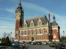

Le Tiger I (Tigre I), diminutif de Panzerkampfwagen VI Tiger Ausführung E - Sonderkraftfahrzeug 181, char d'assaut lourd allemand en service de 1942 à 1945, est l'un des chars les plus connus de la Seconde Guerre mondiale, bien qu'il n'ait été que peu produit par rapport au T-34 soviétique ou au Sherman américain.
Ce sont ses dimensions, ses lignes très carrées, sa résistance au combat, sa puissance ainsi que les équipages expérimentés l'ayant mené au feu qui ont marqué les esprits, notamment du fait de la propagande allemande. Il convient cependant de ne pas le confondre avec la série de chars à laquelle il appartient, le nom de "Tigre" est donné à l'ensemble des Panzer. VI. Le Panzerkampfwagen VI Ausf. B (H) Tiger II (ou Königstiger) n'est qu'une version du char Tigre, certes très différente des précédentes.
Son développement a commencé en 1937 et, quand il apparaît pour la première fois sur le front, le 29 août 1942, près de Léningrad, il est alors le char techniquement le plus avancé, le mieux protégé et le plus puissant aligné par l'Axe, affichant une mobilité limitée mais exceptionnelle pour un engin qui fait plus de deux fois le poids de ses prédécesseurs et de la majorité de ses adversaires chenillés. Mais ce char lourd a pâti tout au long de sa carrière de sa mécanique très fragile réduisant considérablement sa disponibilité au feu, et qui, avec sa faible autonomie et son poids excessif, compliquait sa mise en œuvre opérationnelle. Construit à seulement 1 350 exemplaires, il n'a été que rarement endivisionné mais plutôt engagé dans des unités indépendantes.
| Sports | Tennis de table | Football | Poney | Curling | Patinnage Artistique | Basketball |
|---|---|---|---|---|---|---|
| Compétitions | Jeux Olympiques | Championnats d'Europe | Coupe du Monde | Championnats régionnaux | Coupe District | NBA |